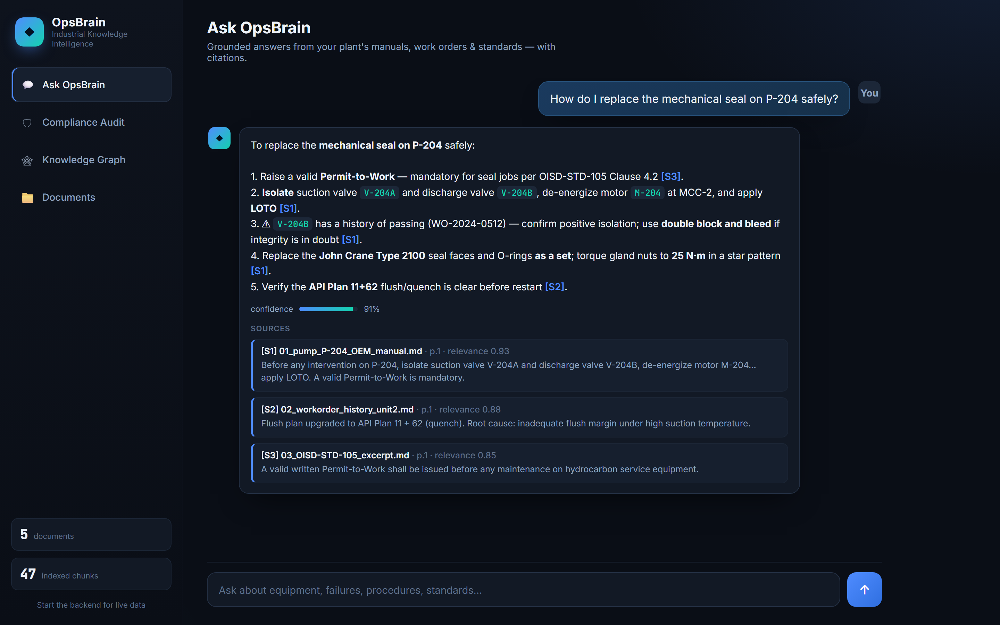
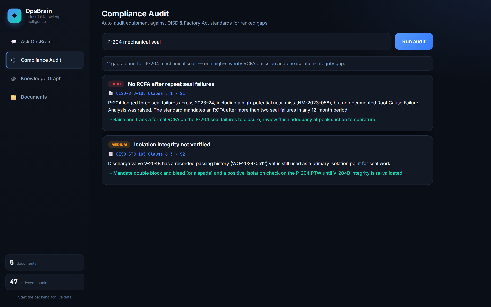
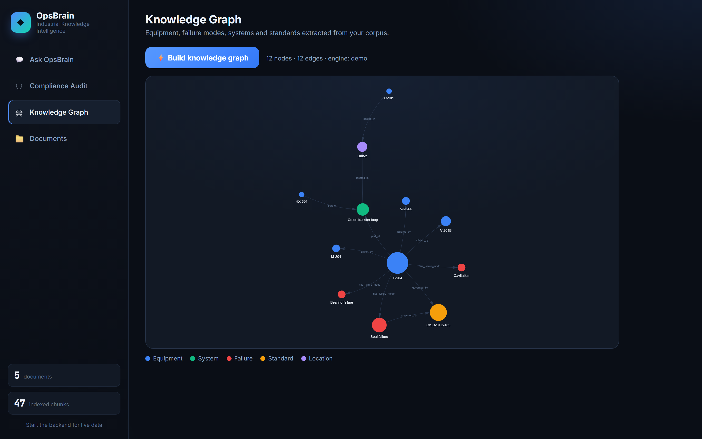

Ask a plant's manuals, work orders and safety standards in plain language, and get a cited answer back in seconds — plus a compliance check and a map of how the equipment connects.
In one paragraph
OpsBrain is a copilot that sits on top of a plant's existing documents — OEM manuals, P&IDs, work-order history, OISD and Factory Act standards, incident reports — and lets an engineer ask it anything. It answers in plain language, cites the exact document and page it used, and tells you how confident it is. On top of that it does two things a search box can't: it audits an asset against safety standards and flags the gaps, and it draws the relationships between equipment, failure modes and the rules that govern them.
I kept coming back to one line from the brief: the information almost always exists, but nobody can find it in time. A single refinery or steel plant runs on tens of thousands of pages, written over decades, sitting in binders, shared drives and a couple of generations of software that don't talk to each other. When a pump trips on the night shift, the maintenance history, the OEM procedure and the relevant safety clause are all there somewhere. The engineer just can't get to them fast enough — so they rely on memory, or on the one person who was around for the last failure.
That has three costs, and they compound:
Studies of process industries put roughly a third of an engineer's day into hunting for information that already exists.
The last work order on an asset is rarely read before the next job, so the same failure comes back.
Compliance obligations live inside long PDFs that nobody re-reads until after an incident forces it.
None of this is a modelling problem. It's a retrieval problem wearing a domain coat — which is exactly what a grounded, cited LLM system is good at, if you build it carefully.
What I built
Everything below runs off the same indexed set of documents. Upload more and all three features get smarter at once.
A technician types a question the way they'd say it out loud. OpsBrain retrieves the most relevant passages, hands them to Claude with strict instructions to stay grounded, and returns an answer where every claim is tagged back to a source. A confidence score (built from retrieval similarity) tells the reader when to trust it and when to go read the manual themselves. If anything implies a safety or compliance risk, the answer flags it.

Point it at an asset and OpsBrain pulls the operational record and the relevant standard, then asks the model to find concrete deviations — not vague advice, but specific gaps tied to a clause and ranked by severity, each with a recommended action.

From the same documents, OpsBrain extracts equipment tags, failure modes, systems, standards and locations, and draws the edges between them. It's how you see that one pump sits at the centre of three failure modes and a safety standard — at a glance.

How it works
One service serves the API and the UI. Retrieval runs with no external dependencies; Claude does the reasoning. Nothing here needs a GPU or a cloud account to run.
| Backend | Python, FastAPI, Uvicorn — one process serves both the API and the UI |
| Retrieval | scikit-learn TF-IDF + cosine similarity, behind a vector-store interface so it can be swapped for embeddings |
| Reasoning | Anthropic Claude (claude-opus-4-8) for answers, compliance analysis and graph extraction |
| Ingestion | pypdf, with sentence-aware overlapping chunking |
| Knowledge graph | NetworkX for centrality, vis-network for the interactive render |
| Front end | A single-page app with no build step — plain HTML/CSS/JS, served by FastAPI |
Engineering decisions
A hackathon rewards finishing, but it's the trade-offs that show judgement. Here are the four I made deliberately.
FastAPI serves the API and the front end from one process, so the whole thing runs with one command. For a solo build and a live demo, that reliability beats premature separation every time.
A managed vector store wanted either a GPU or a C++ build chain just to install — a bad bet on an unknown machine. TF-IDF clones and runs anywhere in seconds. Because it's behind a small interface, moving to embeddings later is a one-file change, not a rewrite.
Retrieval and the graph run offline, and answers degrade gracefully to cited extracts. A judge who clones the repo without a key still sees a working product.
An operations tool that can't show its source is a liability, not an asset. Grounding isn't a feature here — it's the whole point.
The value is boring in the best way: give engineers their time back, stop repeating avoidable failures, and catch compliance gaps while they're still cheap to fix.
Heavy industry — steel, oil & gas, pharma, power — is the backbone of Indian manufacturing, and it's exactly the sector drowning in this kind of documentation. A few percentage points of engineer time, across a plant, is crores a year. One avoided unplanned shutdown pays for the system many times over.
And it scales sideways with almost no rework: the engine is indifferent to which plant it serves. Change the corpus, not the code.
of engineer time spent searching is the pool OpsBrain pulls from.
to run the whole stack — API, UI, retrieval and sample corpus.
industries it ports to with no code change: steel, oil & gas, pharma, power.
Running it
cd backend python -m venv .venv .venv\Scripts\activate pip install -r requirements.txt # optional — turns on Claude-synthesised answers copy ..\.env.example .env # add ANTHROPIC_API_KEY uvicorn app.main:app --reload # open http://localhost:8000
The sample plant corpus — a Unit-2 crude-transfer loop with pump P-204, its OEM manual, two years of work orders, an OISD standard excerpt, a near-miss report and a P&ID description — is indexed automatically on first boot, so there's something to ask immediately. Drop your own PDFs in through the Documents tab and they're chunked and indexed on upload.
Where it goes next
| Now | Cited Q&A, compliance gap detection, knowledge graph and document upload — working end to end. |
| Next | OCR for scanned P&IDs, so legacy drawings become searchable instead of opaque images. |
| Then | Connectors into CMMS / SCADA (SAP PM, Maximo) so live work orders and sensor readings flow in. |
| Later | Predictive maintenance scoring built on the work-order and sensor history the system already holds. |
The honest summary: the hard, demoable core is done and runs anywhere. What's left is integration and depth — and the architecture was chosen so that adding those doesn't mean starting over.